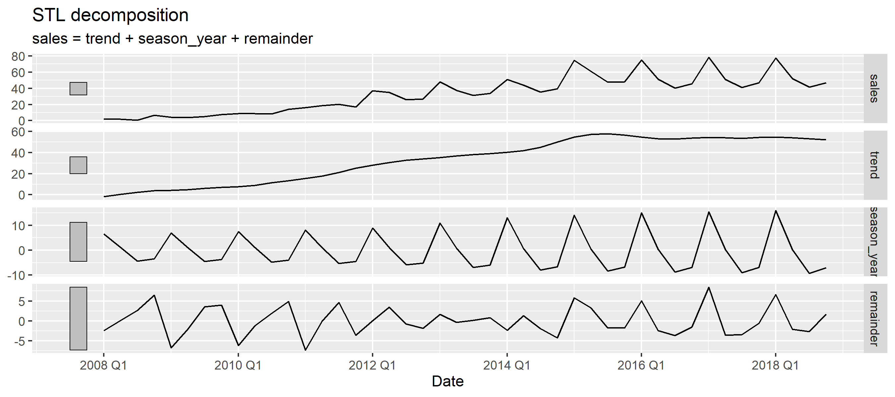

When it comes to building forecasting models there are a number of valid approaches and frameworks that can be used. Our models can be as simple as scaling prior values by a set factor. There is nothing necessarily wrong with this approach; ultimately all models are wrong the most important attribute of a good odel is that it’s useful * !
If we were to opt for a more complex approach, time series modelling approaches provide a powerful framework with the benefit of being easily implementable in R.
Using time series modelling we aim to decompose the data series into the following components:
- Trend component e.g. is my series increasing over time ?
- Seasonal component e.g. ice-cream sales are at their highest in the summer
- Cyclical component; similar to the seasonal component however the change in demand does not follow a cyclical pattern
- Irregular component; changes due to random fluctuations e.g. ice-cream sales spike as it’s an unusually warm summer
An example of a time series is the following plot which shows the development of Apple iPhone sales for the period 2008 to 2018.
We can further decompose the plot into the trend, seasonal and irregular components: 
For this analysis, we will take historic passenger data for Heathrow Airport and see how the an ARIMA Time Series model benchmarks versus actual data.
R Code
For the modelling, the fable package (Forecast Table) is used; this is the successor to the forecast package. The main advantage of Fable over Forecast is that it extends the modelling framework to the multivariate case while retaining the features of the forecast package.
# Importing the required libraries for the analysis
library(tsibble)
library(fable) # the Forecast Table package
library(feasts)
library(tidyverse)
library(lubridate) # for re-encoding certain date fields
library(ggplot2) # for plotting
library(scales) # to make working with scales easierDataset
Data for passenger traffic at Heathrow Airport was sourced directly from the airport website:link. In addition to data for Heathrow, additional information for some of the regional airports is available. However for the purpose of the this analysis only data for the main Heathrow Airport is considered.
passengers <- read.csv('heathrow_passengers.csv', fileEncoding="UTF-8-BOM")
library(lubridate)
passengers[,1] <- dmy(passengers[,1])
# renaming the columns in the data frame
names(passengers) <- c('date', 'monthly_total')The following plot shows the historic passenger traffic through Heathrow Airport - some obvious trends are noticable:
- Seasonal nature of the airport traffic
- General upward trend in number of passengers travelling through the airport
- Significant decrease in traffic during 2020 as a result of Covid-19
Having imported the data into R as a dataframe, it’s necessary to convert it to a tsibble object before it can be used for modelling.
# Re-encoding the date format so it can be detected by fable
passengers$date <- yearmonth(passengers$date)
# Coverting our dataframe to a time series tibble
passengers <- as_tsibble(passengers, index=date)
# plotting the passenger data
# autoplot(passengers, .vars=monthly_total)For the analysis, an ARIMA model is fitted; this is one form of Time Series models - other types include Exponential Smoothing models link or models for datasets that exhibit heteroscedasticity link.
For the initial analysis, only data up to December 2018 is used to fit the model. We will then analyse how this model performs compared to the actual observed values.
# Fitting an ARIMA model
library(feasts)
fit <- passengers %>%
filter(format(date, format = "%Y-%m") <= '2018-12') %>%
model(arima = ARIMA())
# Preview our model parameters
# glance(fit)
# Creating forecasts for 1 year
fc <- fit %>%
forecast(h = "1 year")
# Isolating the 2019 data
data_2019 <- passengers %>% filter(format(date, format = "%Y-%m") <= '2019-12' &
format(date, format = "%Y-%m") >= '2019-01')
fc %>%
autoplot() +
geom_line(data = data_2019,
aes(x = date,
y = monthly_total,
color='darkred'), size=1.25) +
scale_color_discrete(name = "", labels = c("Actual Values")) +
scale_y_continuous(labels = comma) +
labs(title = 'Heathrow Airport Monthly Traffic',
x = '',
y = 'Monthly Passengers')We can see that the forecast is pretty accurate; our forecasts are within the 95% confidence inteval for every month except September. Not bad ! Now lets see what happens if we extend our model to 2020 :
Not so great…….
If we refit our model to include data up to June 2020, the forecast does improve. However we can see that over time the model has a tendency to revert to the mean.
What’s happening here is that our model, using the data that was provided for the fitting purposes assumed that air traffic passengers at Heathrow would return to approximately 3 million passengers by December 2020. Winding the clock back, that might not have been an unreasonable assumption at the the time.
In reality, air traffic passengers did recover in August as predicted by the model before plateauing for the rest of the year as Covid-19 mobility restrictions remained in place.
So what’s the conclusion? Time Series models do provide a framework for predicting trends and forecasting. Notwithstanding this, context is important and the utility of the model should always be considered in the current context which we are producing forecasts for.